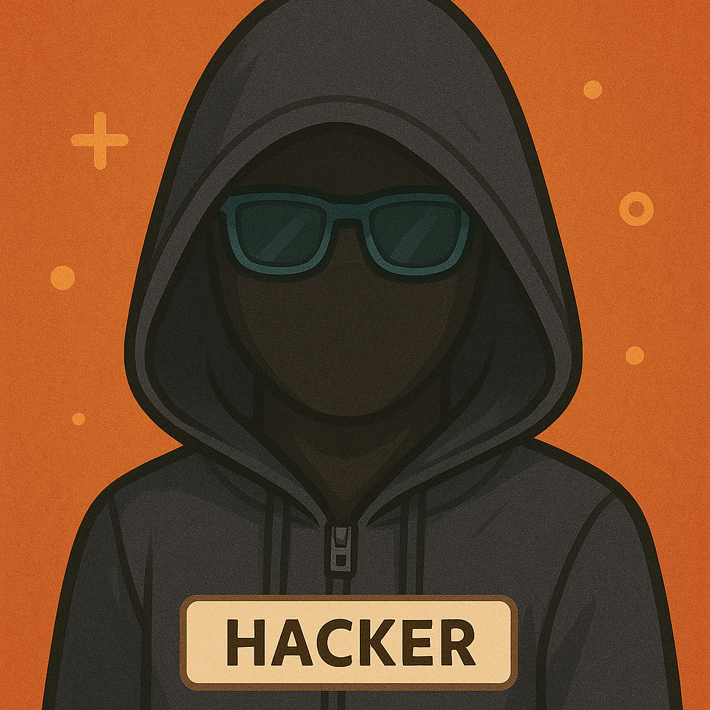

You are part of a special cyber investigation unit. A serious digital breach has occurred in a company. Your mission is to analyze the clues, discuss with your team, and build a solid case against one of the potential suspects. Be careful — things are not always what they seem.
A former IT technician recently let go after a heated argument with his manager.
A young student known for hacking small websites just for fun.
A respected marketing manager... but with unexplained meetings with a competitor.

No records. No identity. Just traces left in the system...
Each case contains 6 digital clues. You must read them carefully, take notes, and discuss with your group. Only one suspect is guilty in each case — but all may have motives. Good luck, detectives!
Clue content here...